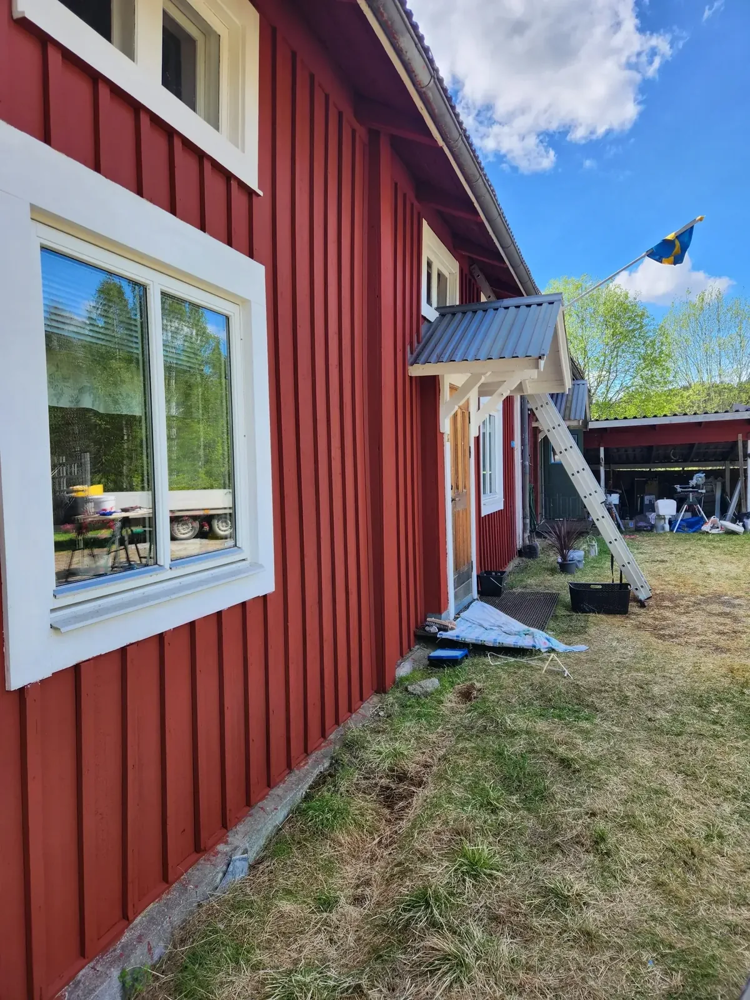
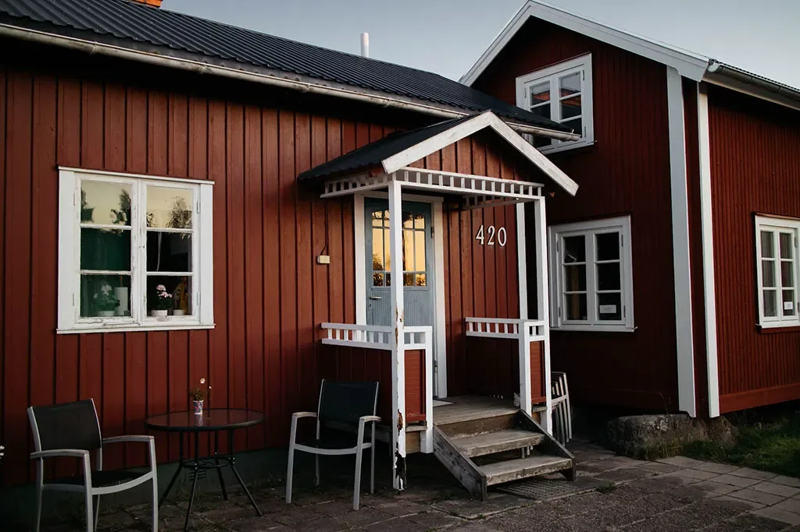
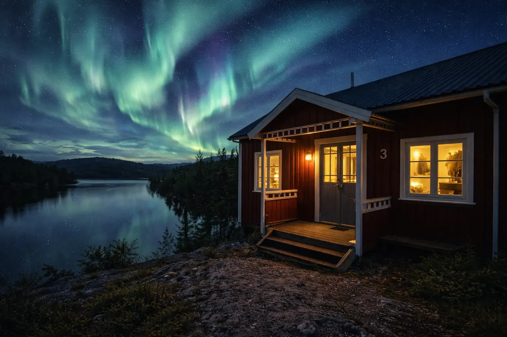
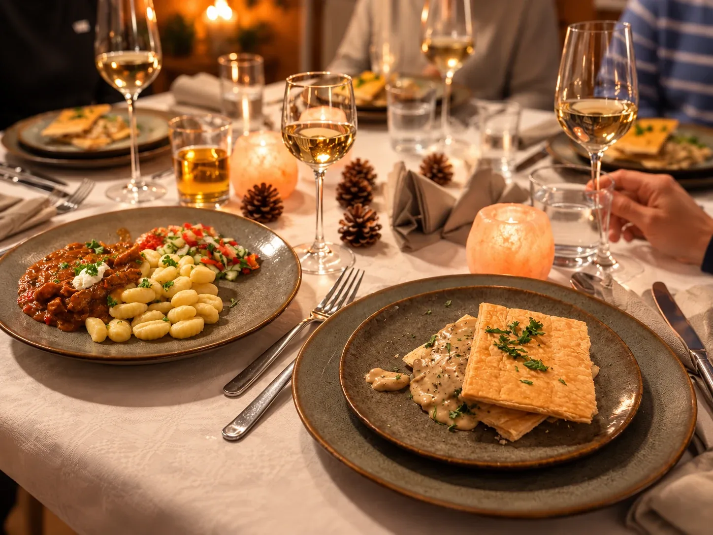
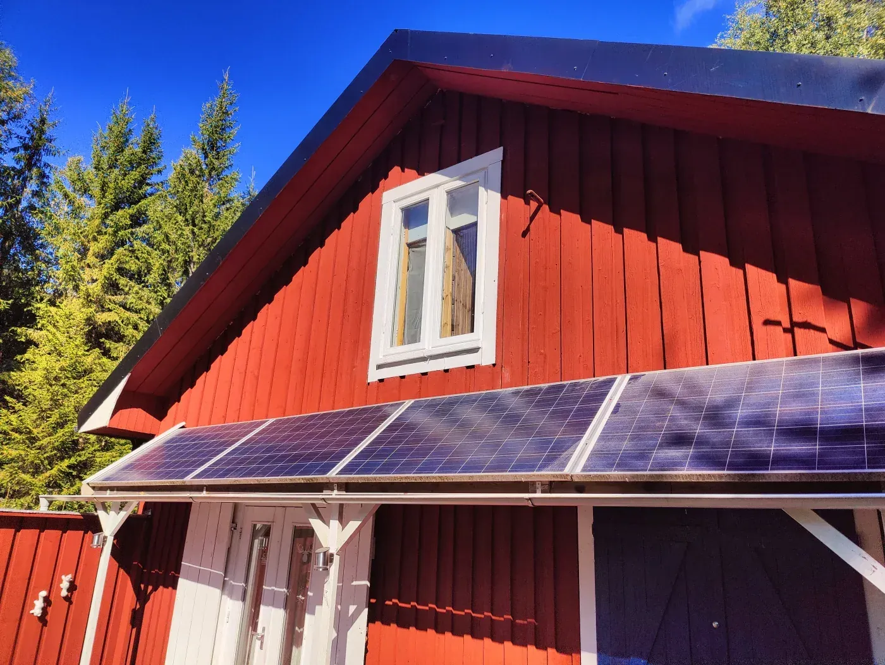
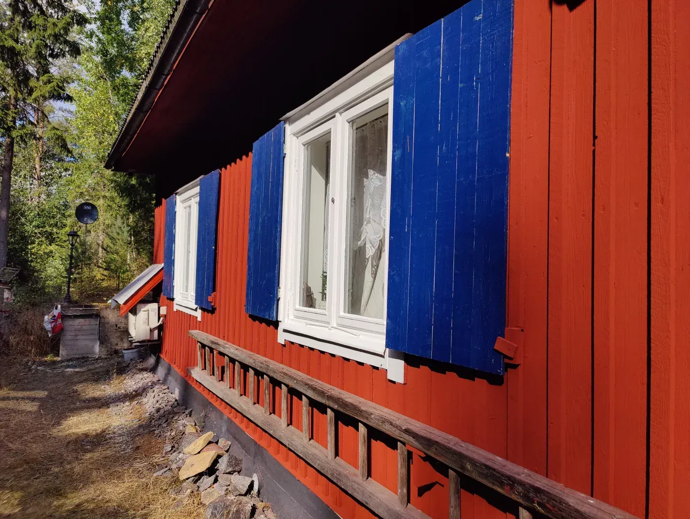
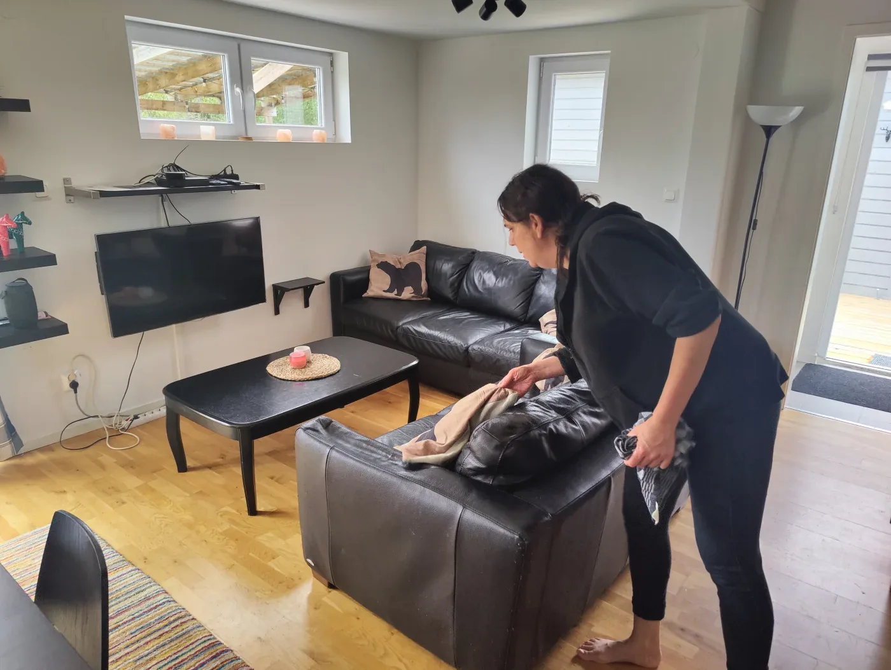
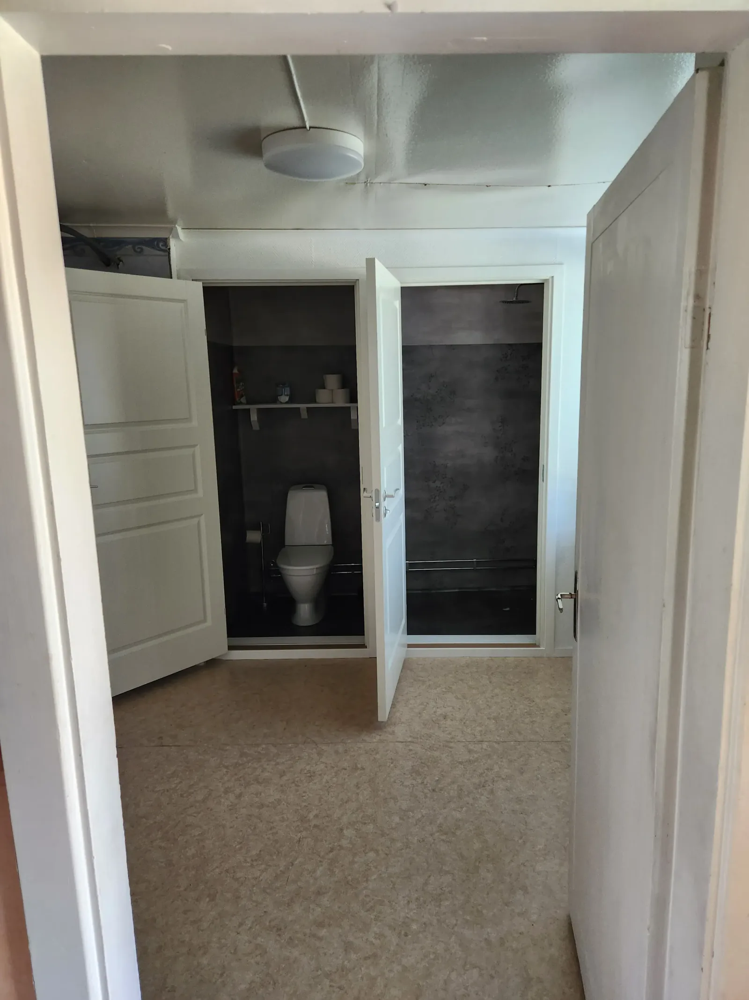
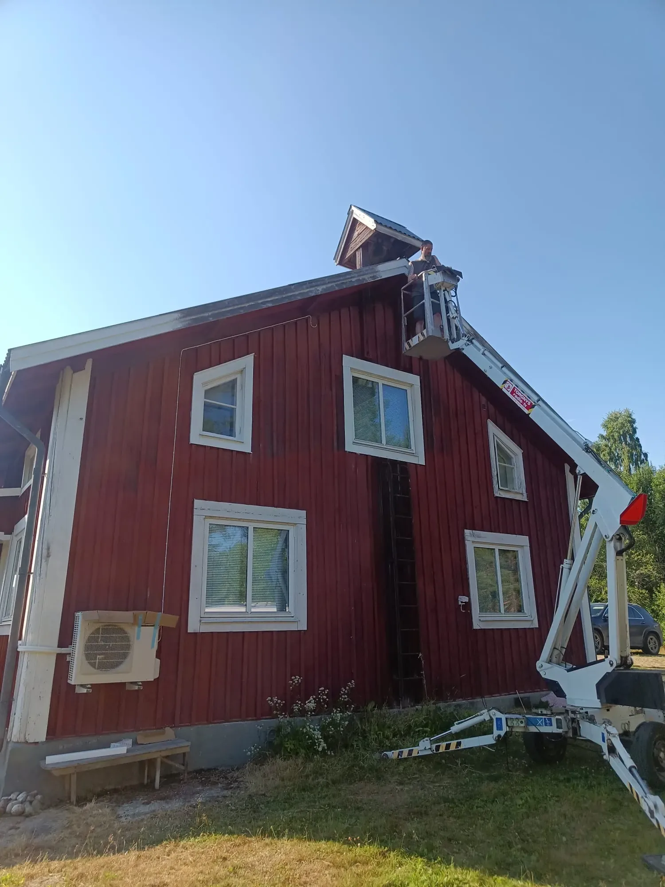

Reparationer & renoveringar
Multikompetent tekniker Värmland
Reparationer, installationer, montering, underhåll och mindre renoveringar i och runt hemmet.
FASTIGHETSTJÄNSTER I VÄRMLAND
Reparationer, mindre renoveringar, huskontroller, fritidshusstöd och Värmlands Private Dining — en pålitlig kontaktperson i Värmland.
DET HÄR KAN VI HJÄLPA MED
Praktisk och teknisk hjälp för husägare, fritidshusägare och småföretag — från enstaka uppdrag till löpande lokalt stöd.

Reparationer & renoveringar
Reparationer, installationer, montering, underhåll och mindre renoveringar i och runt hemmet.

Köpa hus i Sverige
Visningshjälp på plats, praktiska iakttagelser, foton, video och tydlig återkoppling när du inte kan vara där själv.

Trygghet
Fastighetsskötsel, kontroller inför ankomst och mellan gästvistelser samt en praktisk lokal kontakt när du hyr ut ditt svenska fritidshus.

En middag med personlig service
En extra middagsservice för dina semestergäster. Barbara ordnar en 3-rättersmiddag i ditt fritidshus; meny, upplägg och pris avtalas med gästerna i förväg.
“Mycket lyhörd för våra behov och genomgående professionell under hela processen.”Rådgivning på plats i hemmet
“Tack vare hans tydliga vägledning och praktiska kunnande slutfördes installationen framgångsrikt.”Praktiskt stöd
“Tydliga och ärliga överenskommelser. Det utförda arbetet var bra.”Reparationer
Dessa utdrag kommer från Google-omdömen och har översatts från nederländska.
SENASTE ARBETEN
Ett urval av vårt arbete: målning, renoveringar och underhåll av bostäder och fritidshus i Sverige.





NICO ON POINT SERVICES
Med bas i Lesjöfors hjälper vi husägare, fritidshusägare och småföretag med praktiskt och tekniskt arbete. Fokus ligger på tydliga överenskommelser, användbara lösningar och pålitlig uppföljning.
Med Lesjöfors som bas hjälper vi kunder i Värmland och närliggande områden, bland annat Filipstad, Hällefors, Hagfors, Ekshärad, Nykroppa, Karlskoga, Karlstad, Kristinehamn och Sunne. För uppdrag längre bort diskuterar vi möjligheterna och resekostnaderna i förväg.
Restid: De första 30 minuterna restid är gratis. Därefter debiteras restid med 399 SEK per timme inklusive moms.
Kontakta oss →VÄRMLAND · LESJÖFORS · FILIPSTAD
Jag utgår från Lesjöfors och hjälper husägare i Filipstad med omnejd. Uppdrag i andra delar av Värmland är möjliga efter överenskommelse, beroende på avstånd, tillträde och tillgänglighet. Omfattning och resekostnader bestäms i förväg.
Restid: De första 30 minuterna restid är gratis. Därefter debiteras restid med 399 SEK per timme inklusive moms.
LÅT OSS PRATAS VID
Berätta vad du behöver och var fastigheten ligger. Vi återkommer med ett förslag på ett praktiskt nästa steg.